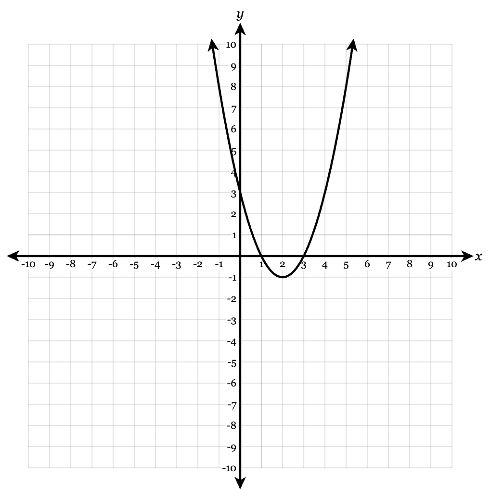

Unit 0A Summative V1
Name:
5.Section A.4/A.5
Use the graph to write a possible equation in vertex form. If the x-intercepts are clear lattice points, also write intercept form. Explain which features you used.

vertex form:
intercept form, if reasonable:
features used / explanation:
6.Section A.1/A.5
Graph \(y=(x-2)^2+1\). Then identify the vertex, axis of symmetry, intercepts when visible, and range.
Use the coordinate plane below.

vertex:
axis of symmetry:
intercepts:
range: